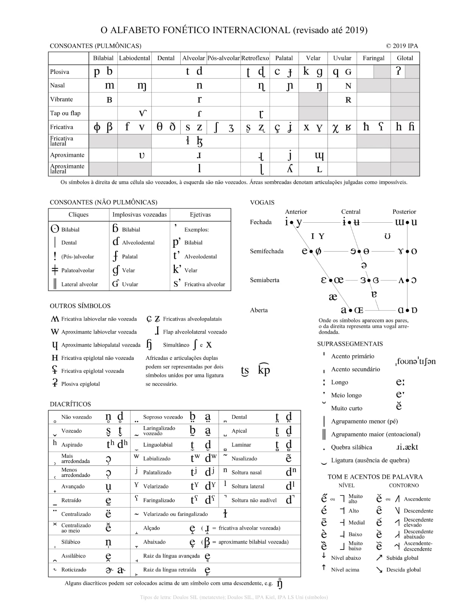
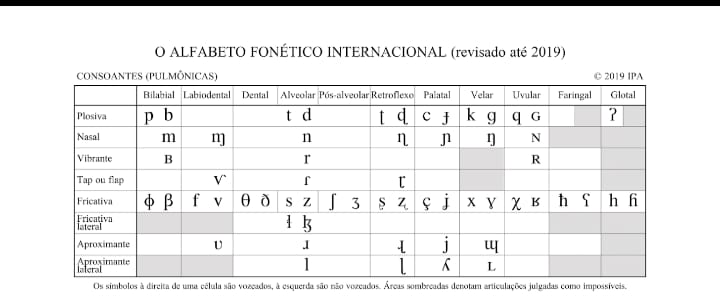
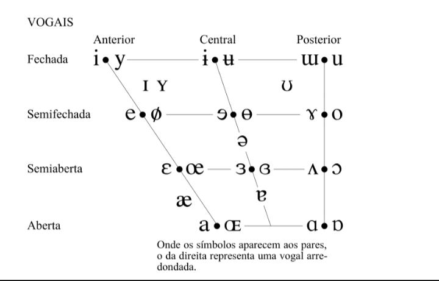

IPA

IPA
O IPA — International phonetic alphabet —, ou simplesmente AFI em português — alfabeto fonética internacional —, é como é a tabela que apresenta os símbolos fonéticos de uma língua. Isto se contrapõe a escrita tradicional, pois o IPA tenta aproximar-se mais do idioma enquanto evolui ao contrário da escrita tradicional que é, muitas vezes, etimológico, ou seja, representa a origem da palavra e não a sua pronúncia. As consoantes e vogais estão aos pares. Isto significa que um membro do par terá sua articulação diferenciada pelo outro minimamente, como por vozeamento — para as consoantes — e por arredondamento labial — para as vogais. a tabela é organizada em um eixo horizontal e vertical: Ponto de Articulação: Indica onde na boca o som é produzido (ex: bilabial, alveolar, velar). Modo de Articulação: Indica como o ar flui (ex: oclusivas, onde o ar é bloqueado, ou fricativas, onde o ar passa criando fricção). Diacríticos e Suprassegmentais. O alfabeto não se limita apenas a letras. Ele utiliza pequenos sinais chamados diacríticos para modificar sons básicos, como indicar se uma vogal é nasalizada ou se uma consoante é aspirada. Além disso, existem os símbolos suprassegmentais, que marcam: Acentuação tônica: O símbolo ˈ antes da sílaba forte. Duração: O símbolo : para indicar sons longos. Entonação e tons: Cruciais para línguas tonais como o mandarim.

Das Consoantes
São ondas articuladas sem muita liberdade pelo aparelho fonador humano. Existem consoantes surdas e sonoras e elas poderão alterar completamente o significado de uma palavra. Uma consonante é surda quando passa sem vibração das codas vocais. Já uma consoante sonoro passa com vibração das codas vocais. Os símbolos das consoantes ficam aos pares para marca esta distinção — entre surda e sonora. O símbolo à esquerda é surdo e à direita, sonoro. Para identificar uma consoante no IPA, não basta saber se ela é surda ou sonora. Os linguistas utilizam uma coordenada de três eixos: Vozeamento: (O que você descreveu: surda ou sonora). Ponto de Articulação: O local onde os órgãos articuladores (língua, dentes, lábios, palato) se tocam ou se aproximam. Exemplos: Bilabial (lábio com lábio), Labiodental (lábio com dentes), Alveolar (língua na crista atrás dos dentes). Modo de Articulação: A maneira como a corrente de ar é manipulada. Exemplos de Modos de Articulação. Oclusivas (ou Plosivas): O ar é totalmente bloqueado e depois solto de uma vez (como o /p/ e /b/). Fricativas: O ar passa por uma fenda estreita, criando um som de chiado ou fricção (como o /f/ e /v/).

Das vogais
São ondas sonoras — ou raramente também se encontra versões surdas — capazes de passar livremente pelo aparelho fonador. O que diferencia uma vogal de outra é quanto a sua altura, arredondamento labial ou sonoridade. Assim como as consoantes, as vogais estão em pares na tabela do IPA. As vogais de par à esquerda são arredondadas e à direita, desarredondadas. O Quadrilátero Vocálico Diferente das consoantes, as vogais são frequentemente representadas em um trapézio (o quadrilátero vocálico). Esse desenho esquemático mapeia a posição da língua em dois eixos: Altura: Se a língua está alta (próxima ao céu da boca) ou baixa. Posterioridade: Se a língua está projetada para a frente ou para trás da boca.
Nota
O IPA é uma ferramenta "viva". O conselho da Associação Fonética Internacional revisa a tabela periodicamente para garantir que ela possa representar qualquer som de qualquer idioma do mundo, desde os cliques das línguas Khoisan até os "erres" vibrantes do português.